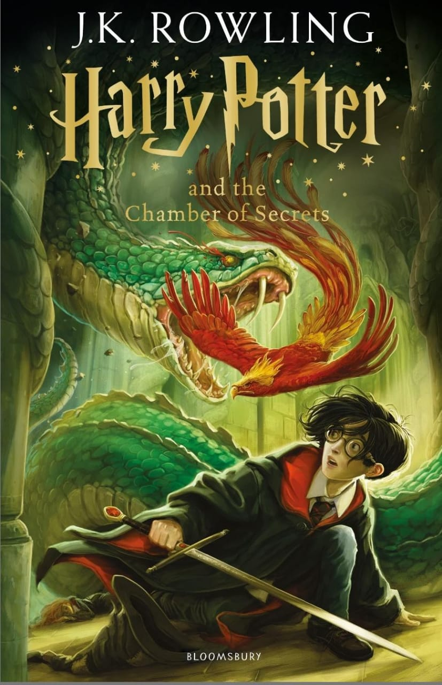

📖 Title: Harry Potter and the Chamber of Secrets

🖋️ Author: J.K. Rowling
📅 Published: 1998
📚 Genre: Fantasy, Mystery, Adventure
🧵 Plot Summary (Deep Dive):
>Harry Potter, now in his second year at Hogwarts School of Witchcraft and Wizardry, returns with high expectations after a thrilling first year. However, the story quickly takes a darker turn.
Before even reaching Hogwarts, Dobby, a house-elf, warns Harry not to return, hinting that great danger awaits. Despite this, Harry is determined and eventually arrives with Ron Weasley—via a flying car, crashing into the Whomping Willow, setting the tone for a year full of chaos and mystery.
Soon after school begins, students are found petrified—literally frozen stiff—by an unknown attacker. The mysterious messages on the walls warn that the legendary Chamber of Secrets has been opened and that the Heir of Slytherin will purge the school of students who are Muggle-born (those born to non-magical parents). Paranoia spreads.
The trio—Harry, Ron, and Hermione—take it upon themselves to solve the mystery. Their investigation leads to crucial discoveries:
The legend of Salazar Slytherin, one of the Hogwarts founders.
The existence of the Chamber of Secrets, supposedly hidden within the school.
The truth that the monster in the Chamber is a Basilisk, a deadly serpent.
Harry’s unusual ability to speak Parseltongue, linking him to Slytherin.
Eventually, Hermione is also petrified, but she provides a clue. Harry and Ron venture into the Chamber through the girls’ bathroom with Professor Lockhart, who is hilariously incompetent and cowardly.
Inside, Harry confronts Tom Riddle, a preserved memory of a student who turns out to be a younger version of Lord Voldemort. Riddle has manipulated events using a diary, possessing Ginny Weasley (Ron's sister) and forcing her to reopen the Chamber.
In a climactic battle, Harry defeats the Basilisk with the Sword of Godric Gryffindor, destroys the diary, and saves Ginny.
🧠 Themes and Analysis:
1. Prejudice and Purity of Blood
The book strongly critiques blood status discrimination in the wizarding world. The idea of "pure-blood" superiority mirrors real-world racism and xenophobia. Characters like Draco Malfoy echo elitist, supremacist attitudes, while Hermione, a brilliant Muggle-born, is a direct challenge to this prejudice.
2. Identity and Destiny
Harry struggles with his identity as he learns more about his connection to Voldemort, especially when he discovers they share abilities (like Parseltongue). He fears he might be like the dark lord, but ultimately proves that choice defines a person, not abilities or lineage.
3. Courage and Loyalty
The bravery of the young trio in the face of mystery, danger, and magical creatures underlines one of the core values of Gryffindor House. Loyalty, especially Harry’s to Dumbledore, plays a key role—summoning Fawkes the Phoenix to help defeat the Basilisk.
4. Power and Deception
The character of Gilderoy Lockhart is a satirical take on fame and false heroism. He fakes his achievements and exploits others’ stories for personal gain. His downfall is both comic and instructive.
🧩 Character Development:
>Harry Potter: Learns more about his past, deepens his moral compass, and shows maturity in handling dangerous situations.
Hermione Granger: Though petrified for part of the book, her intellect drives the investigation forward.
Ron Weasley: Gets more active and brave, especially during the climax in the Chamber.
Tom Riddle: A chilling look at Voldemort’s early manipulation and cunning. His use of charm and deceit is deeply unsettling.
Dobby the House-Elf: Introduced as comic relief but becomes a symbol of servitude and liberation. His later arc in the series makes this debut especially meaningful.
✍️ Writing Style and Tone:
Rowling balances humor, darkness, and mystery expertly. The pacing is quick but rich in detail. Clues are layered throughout, making the twist both surprising and well-earned. The tone is noticeably darker than Book 1, with higher stakes and more serious themes.
🧪 Symbolism:
The Basilisk: Symbolizes hidden danger and fear of the unknown.
Tom Riddle's Diary: Represents how memory and the past can manipulate the present. Also a precursor to the idea of Horcruxes.
Fawkes the Phoenix: Symbol of rebirth, loyalty, and the healing power of goodness.
⭐ Final Verdict:
"Harry Potter and the Chamber of Secrets" is a well-crafted blend of fantasy, mystery, and coming-of-age storytelling. While still suitable for younger readers, it deepens the world-building and raises critical moral questions. It's often underrated compared to other books in the series, but it plays a crucial role in the overarching narrative—especially in setting up Voldemort's history and the concept of Horcruxes.
✅ Rating: ★★★★☆ (4.5/5)
Strong mystery and atmosphere
Important moral and social themes
Great character moments
Slightly weaker pacing in the middle